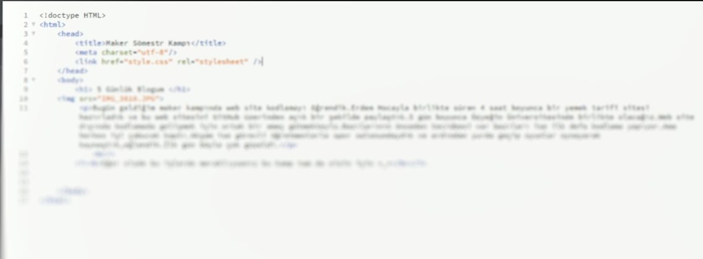
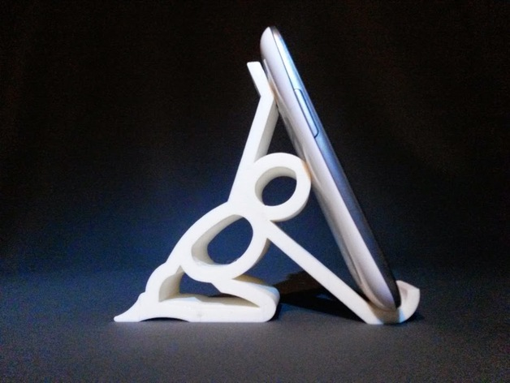
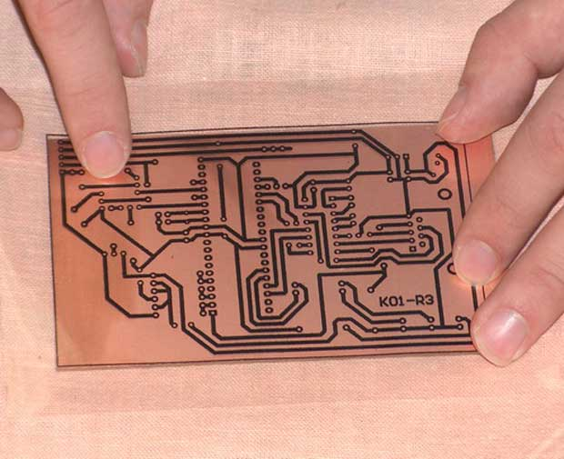
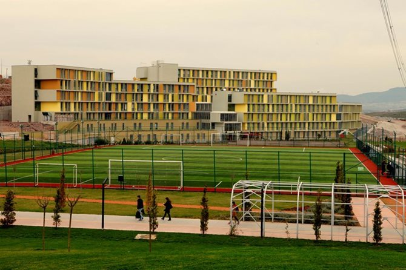

5 Günlük Blogum
Eğer sizde bu işlerde meraklıysanız bu kamp tam da sizin için.
Bugün geldiğim maker kampında web site kodlamayı öğrendik.Erdem Hocayla birlikte süren 4 saat boyunca Brackets adlı programla bir yemek tarifi sitesi hazırladık ve bu web sitesini GitHub üzerinden açık bir şekilde paylaştık.5 gün boyunca Özyeğin Üniversitesinde birlikte olacağız.Web site dışında kodlamada gelişmek için ortak bir amaç gütmekteyiz.Bazılarının önceden tecrübesi var bazıları ise ilk defa kodlama yapıyor.Ama herkes işi çabucak kaptı.Akşam ise görevli öğretmenlerle spor salonundaydık ve ardından yurda geçip oyunlar oynayarak kaynaştık,eğlendik.İlk gün böyle çok güzeldi.

İkinci günde 3D modelleme öğrendik.Erdem Hocayla birlikte t saat 3D tasarlama yaptık.Bu işlemi Fusion 360 adlı uygulamadan gerçekleştirdik.İkinci dersimizde ise 3D anahtarlık ve telefon standı hazırladık.Bu standı ve anahtarlığı ilk baş 3D olarak tasarladık ve sonra anahtarlık veya telefonu koymak için yerler açarak bunu hazır hale getirdik.Ardından ders sonunda endüstri mühendisi 2 kişi geldi.Onlara sorularımızı sorduk.İkinci gün biraz yorucu geçti.
 Üçüncü gün Batuhan Hocamızla birlikte elektronik prototipleme yaptık.İlk önce KiCat adlı programla devremizi çizdik.Ardından bakır levhaların üstüne bu devrelerimizin resmini ütüledik.Sonrasında kağıt kısımları çıkardık ve zımparaladık.Daha sonra tuz ruhunun içine bu bakır levhaları soktuk bu sayede bakır eridi.Bugünlük bu kadar yarın ise lehim yapacağız.Akşam üstü ise kamp öğretmenimiz sayın Burak Abimizle "Chappie" adlı bir film izledik.
 Dördüncü gün ise dün yaptığımız baskı devre kartlarını lehimleyerek led,pil yatağı,pil ve butonları üstüne yapıştırdık.Lehim çok sıcaktı bu sayede metal teli bakırı eriterek birbirine yapıştırdık.Bu sayede yaptığımız devrede sarı,kırmızı ve yeşil ledler çalışmaya başladı.Akşamında ise herkes artık kaynaşmıştı.Vampir,köylü adlı oyunu oynadık.Bu oyun rol oyunuydu ve herkesin yeteneğini ölçmek amaçlıydı.Burak Abiyle birlikte geçen bu 4 akşam gerçekten çok eğlenceliydi.
Dördüncü gün ise dün yaptığımız baskı devre kartlarını lehimleyerek led,pil yatağı,pil ve butonları üstüne yapıştırdık.Lehim çok sıcaktı bu sayede metal teli bakırı eriterek birbirine yapıştırdık.Bu sayede yaptığımız devrede sarı,kırmızı ve yeşil ledler çalışmaya başladı.Akşamında ise herkes artık kaynaşmıştı.Vampir,köylü adlı oyunu oynadık.Bu oyun rol oyunuydu ve herkesin yeteneğini ölçmek amaçlıydı.Burak Abiyle birlikte geçen bu 4 akşam gerçekten çok eğlenceliydi.
 Beşinci gün son günümüzdü.OpenFab laboratuvarımıza inip Batuhan ve Erdem Hocalarımızla güzel 5 günümüzün son 2 dersini işleyecektik.Gerçek anlamda 2 tecrübeli öğretmenle ve bir kaç yardımcı öğretmenlerle çok şey öğrendik.Bugün Arduino eğitimi gördük.Arduino setlerimizden çıkan devreyi programıyla çalıştırdık ve Blink egzersizi yaptık.Çıkış yapmadan önce ise üniversitenin rektörü Sayın Esra GENÇTÜRK bize sertifikalarımızı verdi.Bu macera da burada bitti.Gerçekten harika 5 gündü.Ortam muazzamdı.Bir daha olsa bir daha gelirdim.Tüm herkesi özleyeceğim.